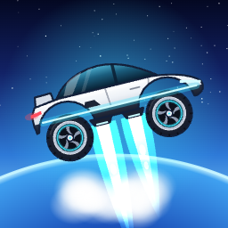

Altivolt

Altivolt
Side-view driving game for iPhone, played in landscape
- Price
- Free
- Zones
- 5
- Languages
- 10
- Requires
- iOS 16
Altivolt is a side-view physics driving game. You drive a futuristic electric car over the hills, and when a ravine opens up ahead, its belly thrusters carry it across. The battery drains as you drive and faster as you fly: pick up green battery cells to recharge it and see how far you get, from a meadow all the way to orbit.
iPhone · landscape · plays offline · no account · no in-app purchases
Screenshots


How to play
Left side of the screen
BRAKE slow down or back up. In the air, it lowers the nose.
THRUSTERS hold to fly over a ravine or save a bad jump.
Right side of the screen
ACCELERATE hold to drive. In the air, it lifts the nose.
Battery
It drains while you drive, and about four times faster while you fly. Green battery cells on the road recharge it. The run ends when the battery is empty or when the car lands on its roof.
Garage
You keep your coins from run to run and spend them in the garage on 4 upgrades with ten levels each: Motor, Suspension, Battery and Thrusters.
Five zones
The road climbs from a meadow to orbit: Meadow, Canyon, Ridges, Stratosphere and Orbit.
Tutorial
Your first run shows the controls step by step. To see it again, tap TUTORIAL on the title screen.
Help
Where is my progress saved?
On your iPhone only: coins, best distance, upgrades and settings. The game has no account and no online save, so deleting the app erases your progress.
Does it need an internet connection?
No. Altivolt plays fully offline.
Why is there an ad?
Altivolt is free, and a small banner at the top of the title and results screens helps pay for its development. It never shows during a run, and it does not show at all when you play offline. The ads are not personalized and the game never asks to track you; the details are in the privacy policy.
Which languages does it speak?
Ten: English, French, German, Spanish, Italian, Brazilian Portuguese, Japanese, Korean, and Simplified and Traditional Chinese. The game follows your iPhone's language, and uses English if yours is not on the list.
A bug, an idea?
Write to nico.valerino@gmail.com with your iPhone model, your iOS version and what happened (a screenshot helps). Thank you!
Contact
Altivolt is made by Nicolas Valerino, an independent developer in Paris. For questions, bugs or ideas: nico.valerino@gmail.com, in English or French.